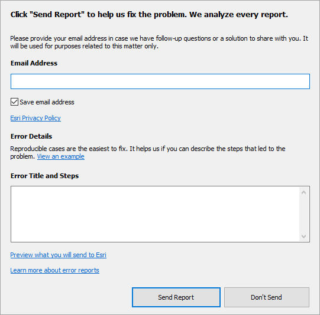
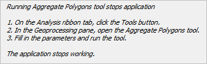

Report software errors
If ArcGIS Pro or another ArcGIS application closes unexpectedly, a dialog box appears, allowing you to send an error report to Esri. You are encouraged to send error reports if the occasion arises. Error reports may contain information about problems such as hardware limitations, memory leaks, or compatibility issues with third-party software that are otherwise hard to diagnose. All reports are analyzed.
 |
You are encouraged to include your email address in the Email Address box. Usually, you will not be contacted. However, in some cases, the Esri Development team may need more information. Your email address will not be used for any purpose other than to contact you about the error report.
It's also helpful to provide a step-by-step description of the software actions that led to the error in the Error Title and Steps box. This makes it easier for developers to reproduce the problem and identify its cause.
Click the link under Error Details to see an example description of a hypothetical error. The description starts with a title. Concise steps that led to the error are provided in a numbered list. The point at which the application stops working is identified.
 |
You can also click a link to preview the error report contents.
For immediate assistance in troubleshooting or working around the problem, contact Esri Support or your international distributor.
How error reports are submitted
By default, error reports are uploaded through a web service to a regional cloud storage location and downloaded from this location by Esri developers. The default storage region is North America. You can change this setting in the General options for the application.
If you don't have internet access when the error occurs, you can attach the report to an email and send it later to ArcGISErrorReport@esri.com. Error report files have the extension .dmp and are saved to the application data location on your computer, typically C:\Users\<User Name>\AppData\Local\ESRI\ErrorReports. The 10 most recent reports are saved.
All error reports are confidential to Esri. Their use is covered by the Esri Privacy Policy.
What happens when you submit an error report
Error reports go through an initial automated review to make sure they contain enough information to be useful and to check whether the problem has been reported previously. If the problem has not been reported previously, a new record is created in the Esri bug tracking system. If the problem has already been reported, the report count is incremented.
Esri developers attempt to diagnose and fix all errors. Once an error is fixed and tested, the fix is installed in the next available software release. However, not every error is successfully diagnosed.
Unlike information collected through the Esri User Experience Improvement (EUEI) program, information collected from error reports is not used to train artificial-intelligence models.
Configure error reporting
If you have administrator privileges on your computer and know how to edit the system registry, you can change the way that you are notified of application errors. Use the following table to create registry keys in HKEY_CURRENT_USER\Software\ESRI\Settings\ErrorReports:
|
Setting |
Type |
Value |
|---|---|---|
|
EnableErrorReport |
DWORD |
Set to 1 to enable error reporting. Set to 0 to disable error reporting. |
|
ShowErrorDialog |
DWORD |
Set to 1 to show the error report dialog box. Set to 0 to suppress the error report dialog box. |
EnableWebService | DWORD | Set to 1 to enable the web service to send the error report. Set to 0 to disable the web service from sending the error report. |
|
EmailAddress |
String |
Specifies the email address to which the error report should be sent manually if the web service is not enabled. The string value should be ArcGISErrorReport@esri.com. |
|
YourEmailAddress |
String |
Specifies the email address that appears by default in the error report dialog box. The string value should be your email address. |
|
CacheSize |
DWORD |
Sets the maximum number of error reports to save on your computer. |
Some registry key settings have dependencies on other keys. The following table describes the effects of different combinations. No matter what combination is used, a copy of the error report is saved to your computer.
|
EnableErrorReport |
ShowErrorDialog |
EnableWebService |
Effect |
|---|---|---|---|
|
1 |
1 |
1 |
The default error report dialog box appears. This is the same behavior as when no registry keys are created. |
|
1 |
1 |
0 |
A dialog box (different from the default error report dialog box) prompts you to save the error report and email it to Esri. |
|
1 |
0 |
0 |
The application closes with no message. No error report is sent. |
|
1 |
0 |
1 |
The application closes with no message. An error report is sent automatically. |
|
0 |
Any |
Any |
A message box informs you that a serious application error has occurred. No error report is sent. |